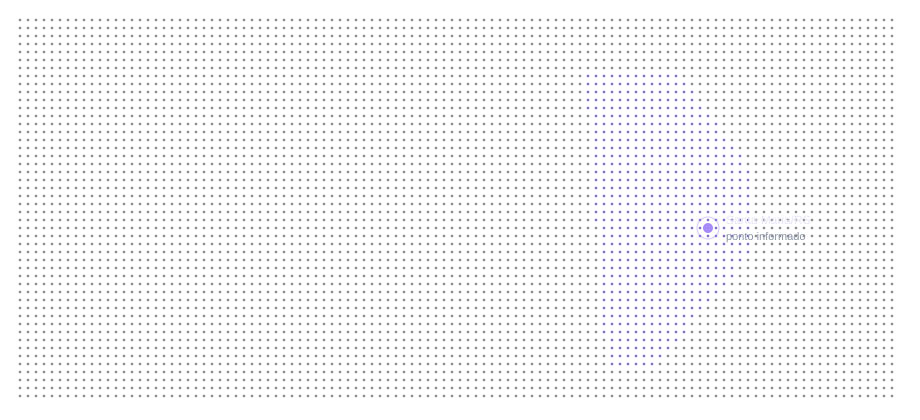

Gerson Luis dos Santos Rodrigues Junior
Signs the company as managing partner. Santa Maria, Rio Grande do Sul.
Team
Fitocrops is a small, active company. The product is built by this group.
Signs the company as managing partner. Santa Maria, Rio Grande do Sul.
Partner on the Brazilian registry of Fitocrops Agroscience LTDA.
Partner on the Brazilian registry of Fitocrops Agroscience LTDA.
Partner on the Brazilian registry of Fitocrops Agroscience LTDA.
Partner on the Brazilian registry of Fitocrops Agroscience LTDA.
Managing partner signs for Fitocrops Agroscience LTDA.
Avenida Roraima, 1000.
A partner can send a photo, a short bio, and the work they want named.

Not an org chart.
Modules, the slip, the words on the dashboard.
Versions, cutoffs, what the model refuses.
The crop problem, in the language of the operation.
Contract, registry, the note that arrives on this site.
The contact page is the door.
Contact
We answer with the fit, the gap, and whether a first version makes sense. Terms come after that, not before.